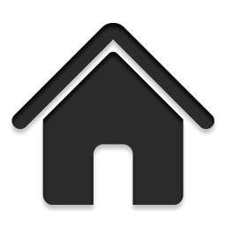
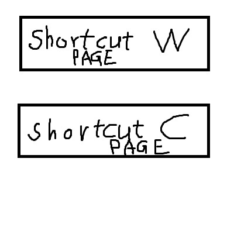

20130913
This is a demo of shortcut keys for hyperlink, tabindex, links as picture. Test result on Chrome: shortcut key will open a popup window, while clicking the hyperlink will open a new sheet page.
Note that under Mac OSX, Alt key is implemented as <Ctrl + Option>.
Press Alt-W
Press Alt-C
Click the picture or press Alt-H to go back to homepage

Click the small picture of Optimus prime or press Alt-P go see the large size of it.

This is an image map. usemap property of <img> can be banner of other pages. It needs more research.
